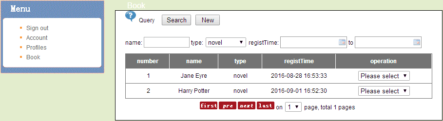
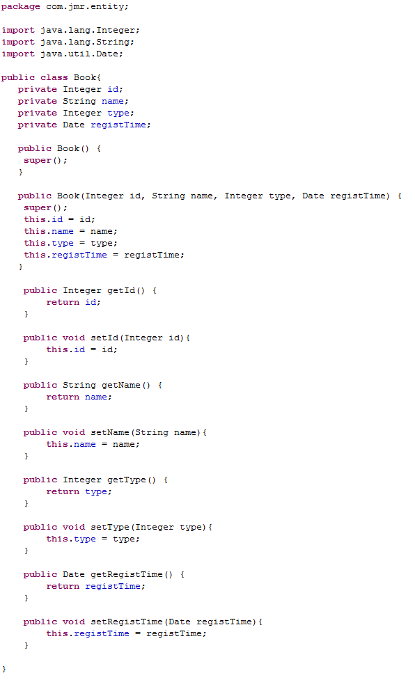

（当前位置，包含最完整的帮助文档）
Jmr全称Jet Model Robotization，在Eclipse中，只要安装了Jmr插件，任何语言(Java，Php，C++等)的项目，任何类型的框架(struts, spring/springMVC, hiberate等)，都可以使用Jmr来生成代码。
Jmr能够把那些项目或框架中的重复的代码，实现自动化生成。只需要根基自己的项目或者框架编写模板，设置任务。
以一个增删查改模块为例，通过以下几步可以实现自动化生成。
1、编写模板
2、设置任务
3、得到模型（数据库）
4、运行生成（模型注入模板）
运行结果，一个模块的所有代码（包括增删查改、前后台）。开发者可以根据自己的项目和框架来编写模板，这也是Jmr的特色。

Jmr使用Jet作为模板，它是Eclipse m2t下的一个模板语言，语法类似于Jsp。

开发者不仅可以像写Jsp那样写模板，还可以使用Jmr的标签，把模型注入模板转换成代码。

生成的实体类代码。

感谢Eclipse基金会和m2t-jet的贡献者。感谢小伙伴陈亚佳3年来的坚持，陈安东的帮助，
以及Jmr开发组的全体成员。
余欣
2017/7/23